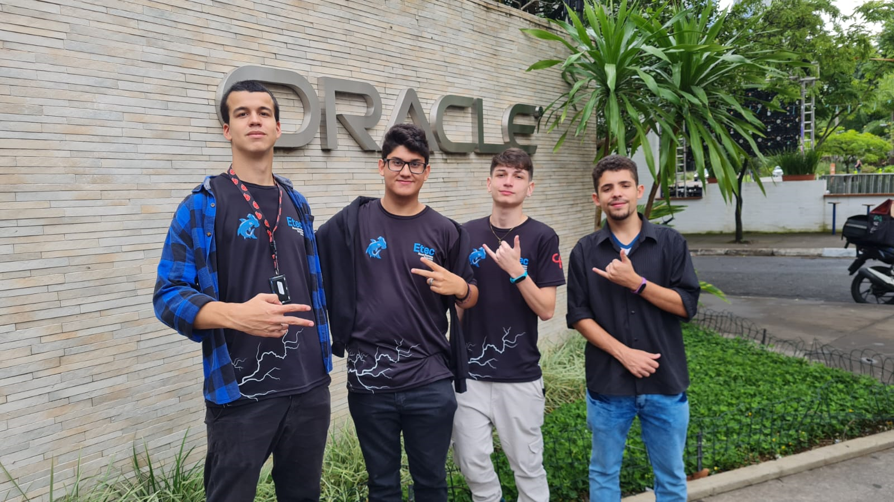

GTI ou Guia do Trabalhador Individual é um aplicativo criado com a finalidade de
garantir mais segurança para o trabalhador individual no mercado de trabalho, sabemos que a maioria dos
acidentes de trabalhos acontecem com trabalhadores terceirizados que não possuem EPI's disponíveis ou
não conhecem as áreas de mais risco dentro da empresa, esses fatores prejudicam e muito o trabalhador
individual
Por esse motivo que criamos um aplicativo que resolve esses problemas dentro da
empresa, nele temos um cadastro em que o trabalhador coloca informações como nome, idade, tipo sanguíneo, etc;
Temos também um formulário focado na area de elétrica que o trabalhador lista as suas tarefas e também lista
EPI's que possue, no final disso tudo, tanto o cadastro quanto o formulario feito pelo trabalhador são guardados
em um banco de dados Firebase e são redirecionados para a empresa, após esses processos, o aplicativo indica os
EPI's que necessita com os melhores preços em determinadas lojas digitais, garantindo uma melhor qualidade de trabalho
e segurança para os trabalhadores.
Criadores

Esse aplicativo foi criado por um grupo de alunos da ETEC Rosa Perrone Scavone, Atualmente
formados em Técnico em Automação Industrial, Os cinco alunos projetaram todo o app para uma competição
de programação chamada Hackatom organizada pelo Centro Paula Souza, juntos eles conseguiram chegar entre
os 9 finalistas da competição;
O nome dos 5 integrantes dessa equipe são respectivamente: Thiago, Hugo, Rafael e Gabriel Domingos (criador do site)
e Nadson, este ultimo não aparece na foto porque ele faltou no dia (vacilão)